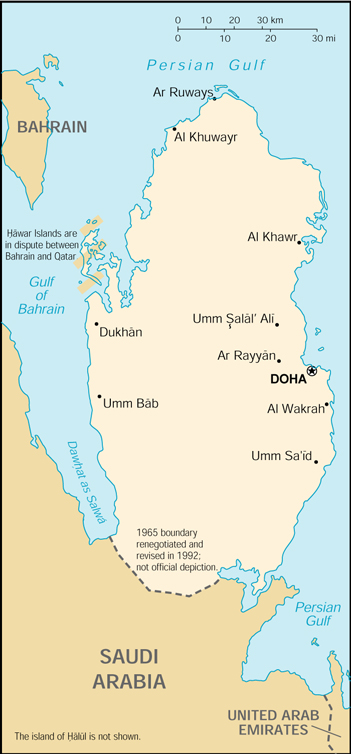

{kind=link}


| Qatar |
|
|
 | |
| Introduction |
Background: During the late 1980s and early 1990s, the Qatari economy was crippled by a continuous siphoning off of petroleum revenues by the amir who had ruled the country since 1972. He was overthrown in a bloodless coup by his own son in 1995. Oil and natural gas revenues enable Qatar to have a per capita income not far below the leading industrial countries of Western Europe.
| Geography |
Location: Middle East, peninsula bordering the Persian Gulf and Saudi Arabia
Geographic coordinates: 25 30 N, 51 15 E
Map references: Middle East
Area:
total:
11,437 sq km
land:
11,437 sq km
water:
0 sq km
Area - comparative: slightly smaller than Connecticut
Land boundaries:
total:
60 km
border countries:
Saudi Arabia 60 km
Coastline: 563 km
Maritime claims:
contiguous zone:
24 nm
exclusive economic zone:
as determined by bilateral agreements, or the median line
territorial sea:
12 nm
Climate: desert; hot, dry; humid and sultry in summer
Terrain: mostly flat and barren desert covered with loose sand and gravel
Elevation extremes:
lowest point:
Persian Gulf 0 m
highest point:
Qurayn Abu al Bawl 103 m
Natural resources: petroleum, natural gas, fish
Land use:
arable land:
1%
permanent crops:
0%
permanent pastures:
5%
forests and woodland:
0%
other:
94% (1993 est.)
Irrigated land: 80 sq km (1993 est.)
Natural hazards: haze, dust storms, sandstorms common
Environment - current issues: limited natural fresh water resources are increasing dependence on large-scale desalination facilities
Environment - international agreements:
party to:
Biodiversity, Climate Change, Desertification, Hazardous Wastes, Ozone Layer Protection
signed, but not ratified:
Law of the Sea
Geography - note: strategic location in central Persian Gulf near major petroleum deposits
| People |
Population: 744,483 (July 2000 est.)
Age structure:
0-14 years:
26% (male 99,702; female 95,960)
15-64 years:
71% (male 378,741; female 152,978)
65 years and over:
3% (male 12,120; female 4,982) (2000 est.)
Population growth rate: 3.35% (2000 est.)
Birth rate: 16.07 births/1,000 population (2000 est.)
Death rate: 4.19 deaths/1,000 population (2000 est.)
Net migration rate: 21.58 migrant(s)/1,000 population (2000 est.)
Sex ratio:
at birth:
1.05 male(s)/female
under 15 years:
1.04 male(s)/female
15-64 years:
2.48 male(s)/female
65 years and over:
2.43 male(s)/female
total population:
1.93 male(s)/female (2000 est.)
Infant mortality rate: 22.14 deaths/1,000 live births (2000 est.)
Life expectancy at birth:
total population:
72.37 years
male:
69.92 years
female:
74.94 years (2000 est.)
Total fertility rate: 3.25 children born/woman (2000 est.)
Nationality:
noun:
Qatari(s)
adjective:
Qatari
Ethnic groups: Arab 40%, Pakistani 18%, Indian 18%, Iranian 10%, other 14%
Religions: Muslim 95%
Languages: Arabic (official), English commonly used as a second language
Literacy:
definition:
age 15 and over can read and write
total population:
79.4%
male:
79.2%
female:
79.9% (1995 est.)
| Government |
Country name:
conventional long form:
State of Qatar
conventional short form:
Qatar
local long form:
Dawlat Qatar
local short form:
Qatar
note:
closest approximation of the native pronunciation falls between cutter and gutter, but not like guitar
Data code: QA
Government type: traditional monarchy
Capital: Doha
Administrative divisions: 9 municipalities (baladiyat, singular - baladiyah); Ad Dawhah, Al Ghuwayriyah, Al Jumayliyah, Al Khawr, Al Wakrah, Ar Rayyan, Jarayan al Batinah, Madinat ash Shamal, Umm Salal
Independence: 3 September 1971 (from UK)
National holiday: Independence Day, 3 September (1971)
Constitution: provisional constitution enacted 19 April 1972
Legal system: discretionary system of law controlled by the amir, although civil codes are being implemented; Islamic law is significant in personal matters
Suffrage: suffrage is limited to municipal elections
Executive branch:
chief of state:
Amir HAMAD bin Khalifa Al Thani (since 27 June 1995 when, as crown prince, he ousted his father, Amir KHALIFA bin Hamad Al Thani, in a bloodless coup); Crown Prince JASSIM bin Hamad bin Khalifa Al Thani, third son of the monarch (selected crown prince by the monarch 22 October 1996); note - Amir HAMAD also holds the positions of minister of defense and commander-in-chief of the armed forces
head of government:
Prime Minister ABDALLAH bin Khalifa Al Thani, brother of the monarch (since 30 October 1996); Deputy Prime Minister MUHAMMAD bin Khalifa Al Thani, brother of the monarch (since 20 January 1998)
cabinet:
Council of Ministers appointed by the monarch
elections:
none; the monarch is hereditary; note - in March 1999 Qatar held elections for representatives to its Central Municipal Council
Legislative branch:
unicameral Advisory Council or Majlis al-Shura (35 seats; members appointed)
note:
the constitution calls for elections for part of this consultative body, but no elections have been held since 1970, when there were partial elections to the body; Council members have their terms extended every four years since
Judicial branch: Court of Appeal
Political parties and leaders: none
International organization participation: ABEDA, AFESD, AL, AMF, CCC, ESCWA, FAO, G-77, GCC, IAEA, IBRD, ICAO, ICRM, IDB, IFAD, IFRCS, IHO (pending member), ILO, IMF, IMO, Inmarsat, Intelsat, Interpol, IOC, ISO (correspondent), ITU, NAM, OAPEC, OIC, OPCW, OPEC, UN, UNCTAD, UNESCO, UNIDO, UPU, WHO, WIPO, WMO, WTrO
Diplomatic representation in the US:
chief of mission:
Ambassador Saad Muhammad al-KUBAYSI
chancery:
4200 Wisconsin Avenue NW, Washington, DC 20016
telephone:
[1] (202) 274-1600
consulate(s) general:
Houston
Diplomatic representation from the US:
chief of mission:
Ambassador Elizabeth MCKUNE
embassy:
22 February Road, Doha
mailing address:
P. O. Box 2399, Doha
telephone:
[974] 884 101
FAX:
[974] 884 150
note:
work week is Saturday-Wednesday
Flag description: maroon with a broad white serrated band (nine white points) on the hoist side
| Economy |
Economy - overview: Oil accounts for more than 30% of GDP, roughly 80% of export earnings, and 66% of government revenues. Proved oil reserves of 3.7 billion barrels should ensure continued output at current levels for 23 years. Oil has given Qatar a per capita GDP three-fourths that of the leading West European industrial countries. Qatar's proved reserves of natural gas exceed 7 trillion cubic meters, more than 5% of the world total, third largest in the world. Production and export of natural gas are becoming increasingly important. Long-term goals feature the development of off-shore petroleum and the diversification of the economy. If high oil prices continue in 2000, Qatar will post its highest ever trade surplus - of more than $4 billion.
GDP: purchasing power parity - $12.3 billion (1999 est.)
GDP - real growth rate: 1.5% (1999 est.)
GDP - per capita: purchasing power parity - $17,000 (1999 est.)
GDP - composition by sector:
agriculture:
1%
industry:
49%
services:
50% (1996 est.)
Population below poverty line: NA%
Household income or consumption by percentage share:
lowest 10%:
NA%
highest 10%:
NA%
Inflation rate (consumer prices): 2% (1999)
Labor force: 233,000 (1993 est.)
Unemployment rate: NA%
Budget:
revenues:
$5 billion
expenditures:
$4 billion, including capital expenditures of $NA (FY99/00 est.)
Industries: crude oil production and refining, fertilizers, petrochemicals, steel reinforcing bars, cement
Industrial production growth rate: NA%
Electricity - production: 6.715 billion kWh (1998)
Electricity - production by source:
fossil fuel:
100%
hydro:
0%
nuclear:
0%
other:
0% (1998)
Electricity - consumption: 6.245 billion kWh (1998)
Electricity - exports: 0 kWh (1998)
Electricity - imports: 0 kWh (1998)
Agriculture - products: fruits, vegetables; poultry, dairy products, beef; fish
Exports: $6.7 billion (f.o.b., 1999 est.)
Exports - commodities: petroleum products 80%, fertilizers, steel
Exports - partners: Japan 50%, Singapore 12%, South Korea 9%, US, UAE (1997)
Imports: $4.2 billion (f.o.b., 1999 est.)
Imports - commodities: machinery and transport equipment, food, chemicals
Imports - partners: UK 25%, France 13%, Japan 10%, US 9%, Italy 6% (1997)
Debt - external: $10 billion (1998 est.)
Economic aid - recipient: $NA
Currency: 1 Qatari riyal (QR) = 100 dirhams
Exchange rates: Qatari riyals (QR) per US$1 - 3.6400 riyals (fixed rate)
Fiscal year: 1 April - 31 March
| Communications |
Telephones - main lines in use: 146,980 (1995)
Telephones - mobile cellular: 18,469 (1995)
Telephone system:
modern system centered in Doha
domestic:
NA
international:
tropospheric scatter to Bahrain; microwave radio relay to Saudi Arabia and UAE; submarine cable to Bahrain and UAE; satellite earth stations - 2 Intelsat (1 Atlantic Ocean and 1 Indian Ocean) and 1 Arabsat
Radio broadcast stations: AM 6, FM 5, shortwave 1 (1998)
Radios: 256,000 (1997)
Television broadcast stations: 2 (plus three repeaters) (1997)
Televisions: 230,000 (1997)
Internet Service Providers (ISPs): NA
| Transportation |
Railways: 0 km
Highways:
total:
1,230 km
paved:
1,107 km
unpaved:
123 km (1996 est.)
Pipelines: crude oil 235 km; natural gas 400 km
Ports and harbors: Doha, Halul Island, Umm Sa'id
Merchant marine:
total:
24 ships (1,000 GRT or over) totaling 721,756 GRT/1,132,510 DWT
ships by type:
cargo 10, combination ore/oil 2, container 7, petroleum tanker 5 (1999 est.)
Airports: 4 (1999 est.)
Airports - with paved runways:
total:
2
over 3,047 m:
2 (1999 est.)
Airports - with unpaved runways:
total:
2
914 to 1,523 m:
1
under 914 m:
1 (1999 est.)
Heliports: 1 (1999 est.)
| Military |
Military branches: Army, Navy, Air Force, Public Security
Military manpower - military age: 18 years of age
Military manpower - availability:
males age 15-49:
306,850
note:
includes non-nationals (2000 est.)
Military manpower - fit for military service:
males age 15-49:
160,899 (2000 est.)
Military manpower - reaching military age annually:
males:
6,471 (2000 est.)
Military expenditures - dollar figure: $816 million (FY99/00)
Military expenditures - percent of GDP: 8.1% (FY99/00)
| Transnational Issues |
Disputes - international: the territorial dispute with Bahrain over the Hawar Islands and the maritime boundary dispute with Bahrain are currently before the International Court of Justice (ICJ); June 1999 agreement has furthered the goal of definitively establishing the border with Saudi Arabia